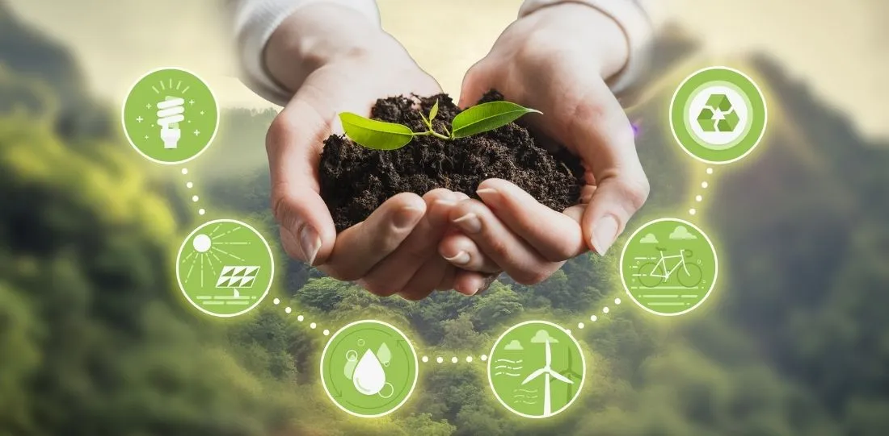

Capítulo 6
El Desarrollo Sustentable
Introducción al desarrollo sustentable
A lo largo del tiempo, la especie humana ha provocado intensas transformaciones en la naturaleza en su búsqueda de sustento y seguridad. Estos efectos han alcanzado magnitudes que, en muchos casos, son irreversibles. La evolución moderna y la revolución científica llevaron a separar la idea de naturaleza y recursos, suponiendo que los ecosistemas tenían capacidad infinita para absorber contaminantes y proveer recursos.
Entre los niveles de alteración se encuentran: la contaminación por procesos productivos agropecuarios y, en el ámbito global, problemas como la destrucción de la capa de ozono, el efecto invernadero y el cambio climático.
Definición
El desarrollo sustentable se define como: “El desarrollo que satisface las necesidades del presente sin comprometer la capacidad de las futuras generaciones para satisfacer sus propias necesidades”.
Se sostiene sobre cuatro dimensiones:
Económica
Indicadores como consumo de energía y producto nacional bruto.
Humana
Salud, educación, ambiente limpio y participación social.
Ambiental
Protección, cuidado y restauración del ambiente.
Tecnológica
Estrategias no destructivas que favorezcan la sostenibilidad.
Indicadores y criterios de sustentabilidad
Los indicadores permiten identificar tendencias ocultas sobre el estado de la sustentabilidad. Los criterios organizan la información en temas evaluados por indicadores, con base en estadísticas ambientales que apoyan las políticas económicas y sociales.
Parámetros de desempeño ambiental (PER)
- Presión: Extracción y uso del agua en una región.
- Estado: Disponibilidad, calidad y administración del recurso hídrico.
- Respuesta: Regulaciones, normas y tarifas aplicadas al recurso.
Servicios ambientales
Los servicios ambientales son beneficios intangibles derivados de los ecosistemas, como la captura de carbono, la regulación del clima, la polinización y el control de la erosión. Estos servicios, reconocidos en la Ley General de Vida Silvestre, son fundamentales para apoyar la conservación y el desarrollo sustentable.